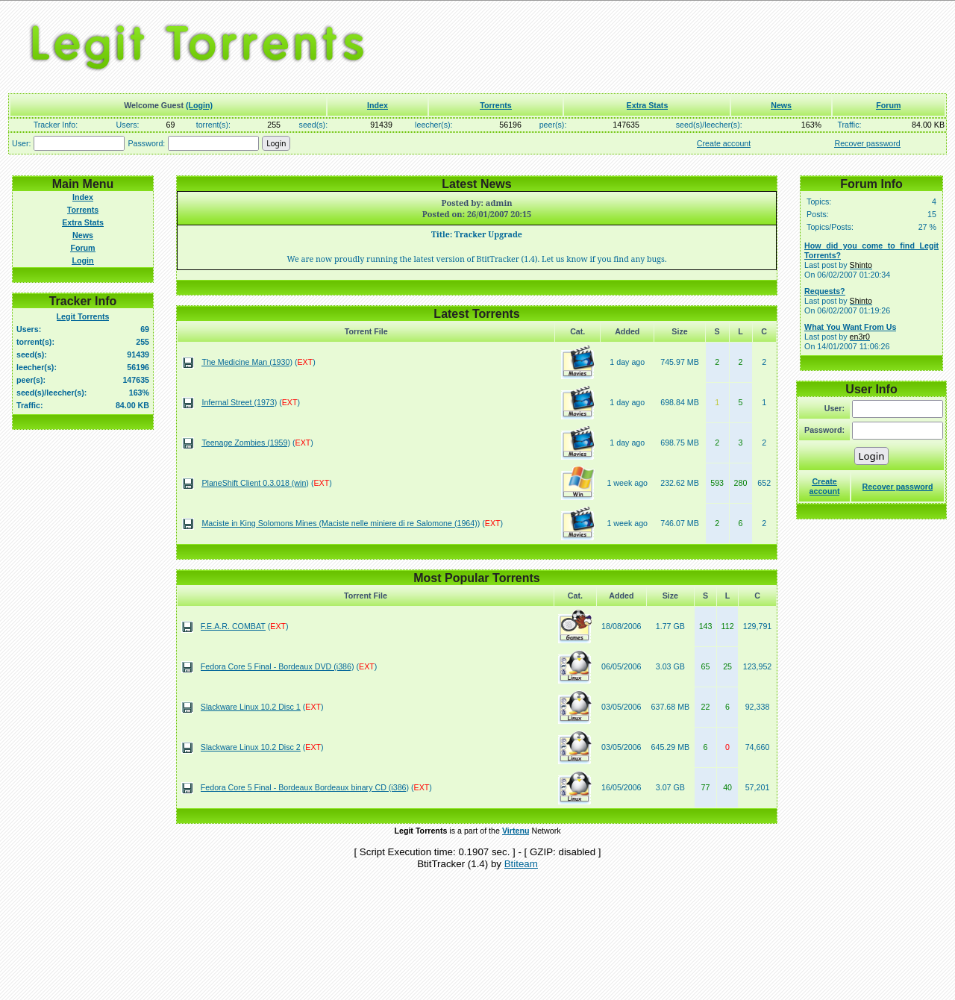
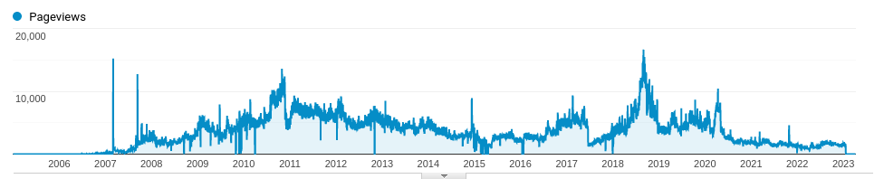
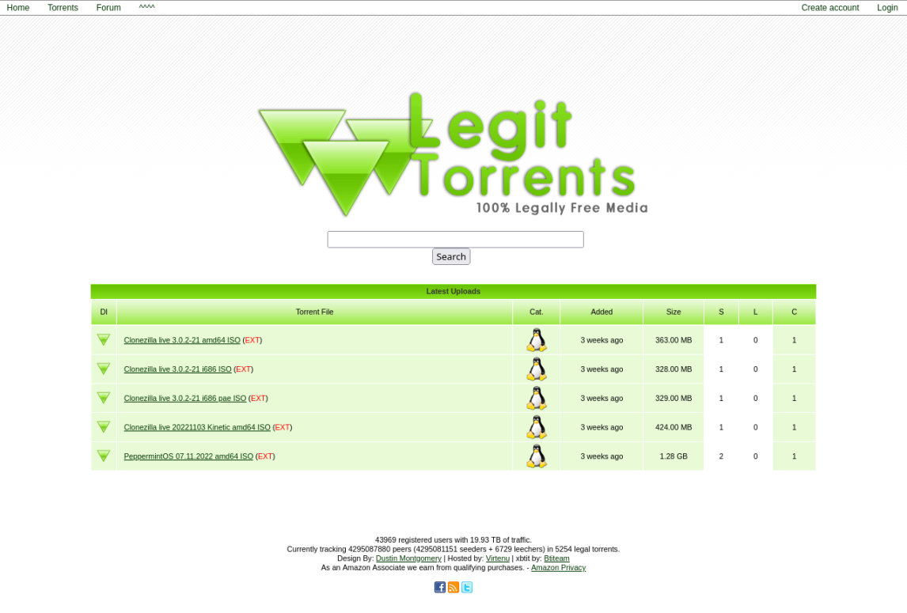

|
TL;DR - The server was null routed at the host and with no time and no 1 click way spin it up again I decided to throw in the towel. The rest is a fun look back. I started Legit Torrents in the Fall of 2005. I was still in high school and back then there was no 100% legal torrent tracker that anyone could easily submit to. There was legaltorrents.com, but if memory serves me correctly, it was more of a curated thing. I was super cheap back then, not even wanting to shell out for a domain name, so the original URL was virtenu.dyndns.org/lt. Eventually I bought the .info for $0.99 after the site picked up some speed a few months later. After some convincing, my brother was kind enough to be my 3rd user (after the default admin account and my own personal user account) and obliged me in posting comments to make it seem more lively. Thanks bro. A few more shout outs to the XBT project that provided the high performance backend, as well as the XBTIT project for the front end which is still going strong. I ran it out of my bedroom at my parents house for a long time, eventually switching over to a VPS sometime when I moved out. I cannot state enough how much I learned from running this site and others. Way better than a degree in my opinion. Web development, marketing, server administration, ect. It was one of my first exposures to implementing SEO (what I now do for a living), which funny enough was mostly copied tags from The Pirate Bay and modified to be about legal torrents instead. The early days was where a lot of time was spent trying to tell people about the website. Some of my fondest memories are of being at school on Digg.com (back before the v4 fiasco of course) and posting comments to the Upcoming / Hot section where stories were at right before they hit the front page. Almost always the first comments in the thread would become the top comments, with no way to sort, and I would always sign my comment with legittorrents.info. Then later I would come back and check the Google Analytics stats to see those sweet sweet traffic spikes. This site was also how I made my first dollar online. Google Adsense was profitable on the site for many years, earning me some really nice pay checks here and there. That is, until I got my Adsense account banned by trying out some too good to be true website purchases that turned out to be using fraudulent clicks. Since there there has been next to no profit, and that was years ago. Later on I redesigned the site to have a very cool custom Web 2.0 style, something I worked quite diligently on after graduating from a local college. I left it that way from then on and I still think it's pretty rad. I had a routine in the early years, to check through a list of sites for new torrents to add to my site. I had always wanted to automate it, but never succeeded in doing so. Being a digital hoarder has it perks though, and that folder is still a part of my bookmarks. Looking through it most of them are dead of course, but a few of my favorites were:
Of course, I always enjoyed seeing what super random things people would upload also. I helped my friends launch an album that they produced, which I had “pinned” to the torrents page for a long time. Not sure it really helped them gain international fame or anything, but it was cool to see people download and enjoy the music. Someone kept seeding or trying to download it it recently actually which was entertaining since it was from 2008 I think. One time I got a take down from “The Web-Sheriff” and used it as a chance to get some publicity. Probably not the right thing to do, but that turned into an article on TorrentFreak, which I thought was pretty cool to be on. In the end there were about ~50,000 registered users, ~5,500 torrents, ~22M tracked pageviews over the course of time. It doesn't seem like much when its typed out like that, at least compared to platforms nowadays, but pretty cool still. It's not an easy thing to say goodbye to this silly site. It has been a part of my entire adult life. For ~17 years it was always there for me to check on, moderate, and take care of. It had me feeling like I was doing a part of something good for the internet I suppose. That is confirmed as I look through mentions of the site with a Google search. If you ever used Legit Torrents, I sincerely hope it helped you. My mission in life is love Jesus and love others, and I think Legit Torrents did that in some weird techy way. If you have something to share about the site, please drop me a line, I would love to hear it: en3r0[DOT]x[AT]gmail[DOT]com . |